- Bis zu 8 Personen
- Nichtraucherhaus
- Keine Haustiere
- Ruhige Lage in Eigenheimsiedlung
- Zwei Stellplätze
- Småland · Nähe Vimmerby
Unser Ferienhaus
Unser liebevoll eingerichtetes Ferienhaus liegt ruhig in einer Eigenheimsiedlung in naturnaher Umgebung – ein Ort zum Ankommen und Durchatmen.
Rund 40 Kilometer von Vimmerby entfernt, im Herzen des schönen Småland, umgeben von Wäldern und typischer schwedischer Landschaft.
Das Haus wurde 2024 umfassend renoviert und bietet mit seiner hellen, modernen Ausstattung Platz für bis zu acht Personen.
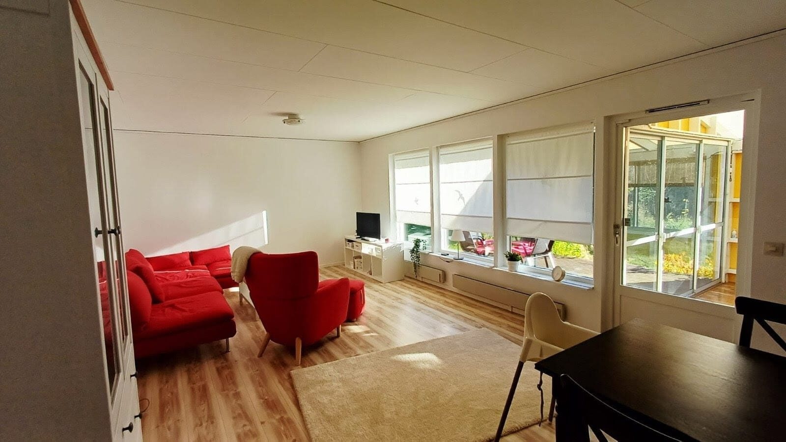Der helle Wohnbereich lädt mit gemütlicher Sitzecke und Blick ins Grüne zum Verweilen ein. Große Fenster sorgen für viel Tageslicht und eine angenehme Atmosphäre zu jeder Jahreszeit.
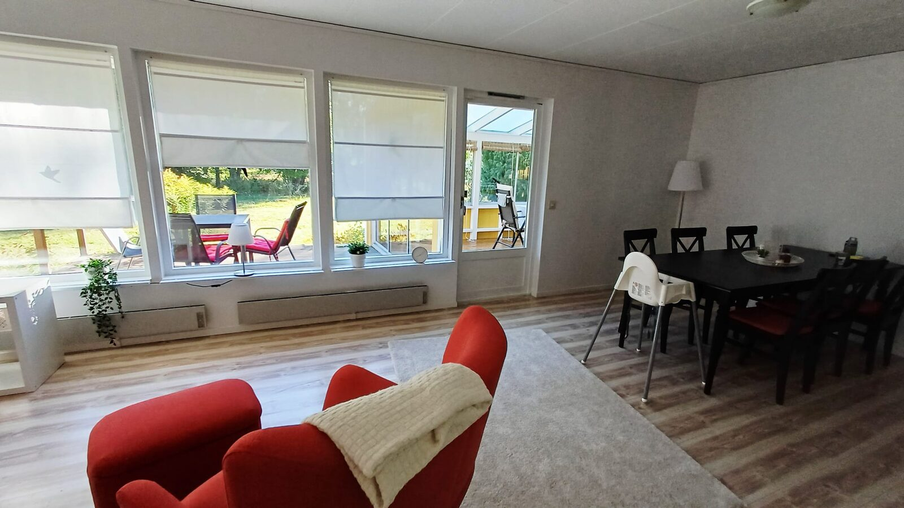Im Wohnbereich ist ein Esstisch für bis zu 8 Personen vorhanden.
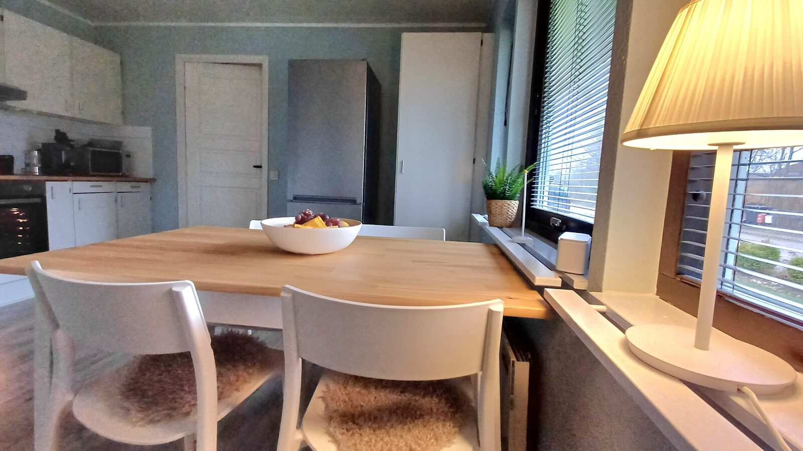Die moderne Küche ist vollständig ausgestattet und ermöglicht eine unkomplizierte Selbstversorgung. (...).
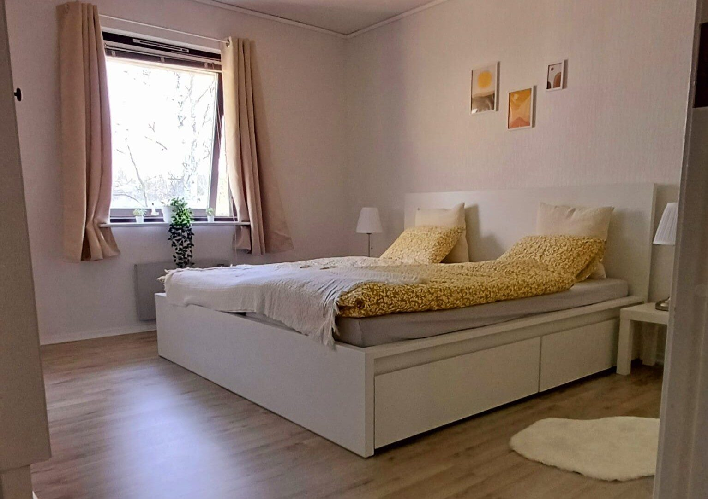Im Erdgeschoss stehen drei Schlafzimmer zur Verfügung. Ein Schlafzimmer ist mit einem Doppelbett eingerichtet.
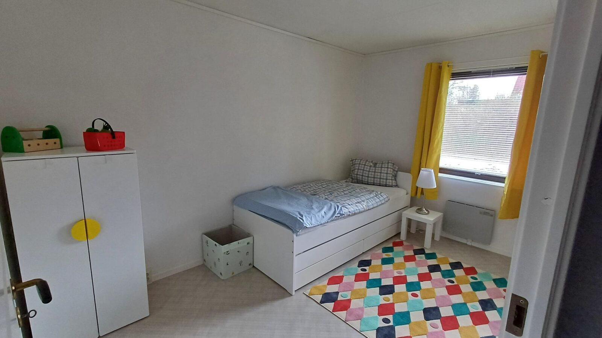Die beiden weiteren Schlafzimmer verfügen jeweils über ein Ausziehbett und bieten flexible Schlafmöglichkeiten.

Von der Terrasse aus genießen Sie entspannte Abende mit Blick in die umliegende Natur. Ein Grill sowie bequeme Gartenmöbel stehen für gemütliche Stunden im Freien bereit.
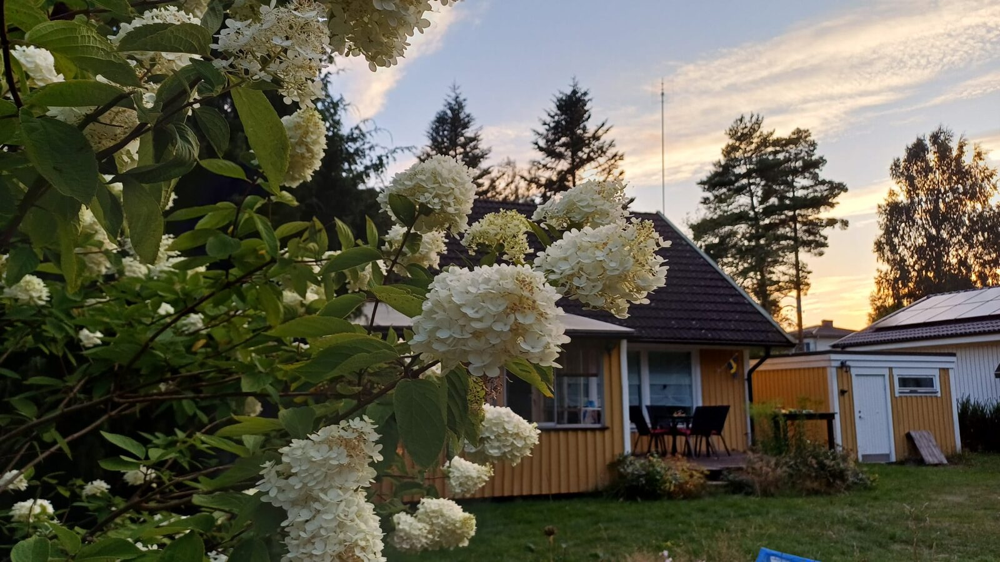Der großzügige Garten bietet viel Platz zum Spielen, Entdecken und Entspannen – ideal für Kinder und alle, die Ruhe und Natur schätzen.
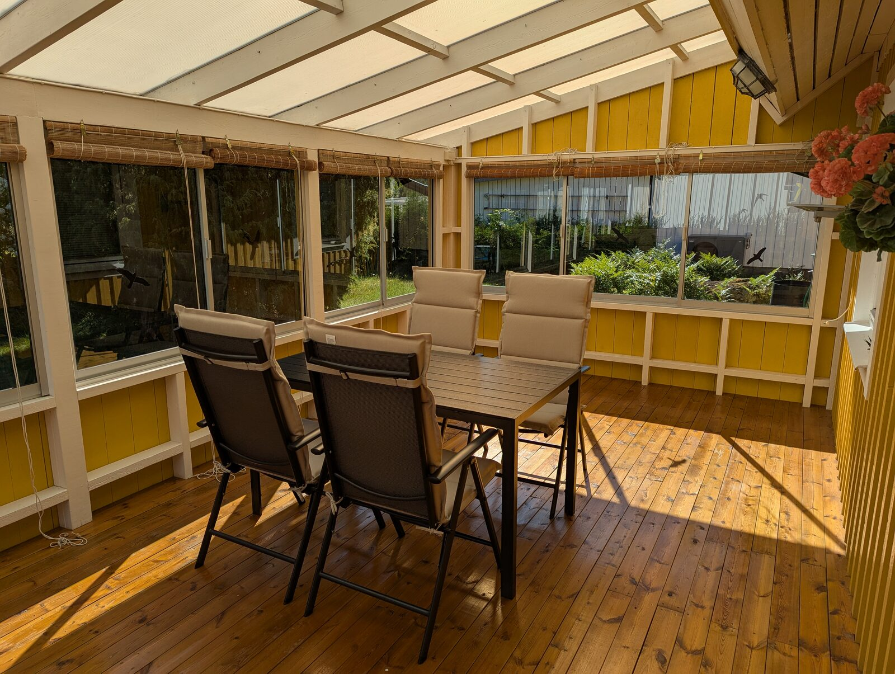Besonders bei wechselhaftem Wetter lädt der helle Wintergarten zum Verweilen ein. Ob beim Frühstück, Lesen oder einem Spieleabend: Hier sitzen Sie geschützt und haben dennoch das Gefühl, mitten in der Natur zu sein.
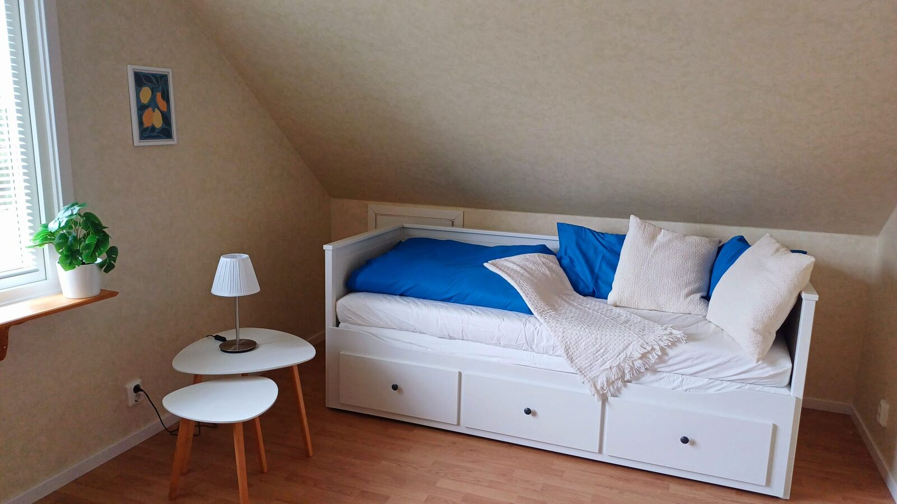Das Obergeschoss bietet ein weiteres, großzügiges Schlafzimmer mit Ausziehbett, gemütlicher Leseecke und eigenem WC.
Ausstattung
-
Voll ausgestattete Küche mit
- Elektroherd mit Backofen
- Geschirrspüler
- Kühl- und Gefrierkombination
- Kaffeemaschine (Senseo-Pads und Filterkaffee)
- Badezimmer mit WC und Duschwanne im Erdgeschoss
- Separates WC mit Waschbecken im Obergeschoss
- Waschmaschine
- WLAN
- Fernseher mit deutschen Programmen
- Kinderhochstuhl und Baby-Reisebett (ohne Bettwäsche)
- Kicker, Bälle und weitere Spielzeuge für drinnen und draußen
- Grill
- Gartenmöbel
- Zwei Stellplätze direkt vor dem Haus
- Bettwäsche und Handtücher auf Anfrage
Lage & Umgebung
Das Ferienhaus liegt ruhig in einer Eigenheimsiedlung ohne Durchgangsverkehr, in der kleinen Ortschaft Mörlunda in Småland.
Ein Supermarkt sowie ein Spielplatz mit Fußballtoren, Frisbee-Korb und Bereichen für Klein- und Schulkinder sind in wenigen Minuten zu Fuß erreichbar.
Im Ort befinden sich außerdem ein Arzt, eine Apotheke, eine kleine Pizzeria sowie eine Autowerkstatt mit Tankstelle.
Nur etwa fünf Autominuten entfernt liegt ein idyllischer Badesee mit Liegewiese, Schaukel, Umkleidemöglichkeiten und Toiletten. Weitere Seen finden sich überall in der Umgebung.
In der Region laden zahlreiche Ausflugsziele zu Entdeckungstouren ein: ein Elchpark, eine Draisinenfahrt oder ein Besuch der charmanten Kleinstadt Vimmerby (ca. 40 km) mit dem Astrid-Lindgren-Land, Astrid-Lindgren-Näs, gemütlichen Restaurants und kleinen Geschäften.
Innerhalb einer Stunde erreichen Sie weitere Sehenswürdigkeiten wie den Michelhof Katthult, ein Besucherbergwerk, eine Bonbonfabrik, eine nostalgische Schmalspurbahn sowie Naturreservate und Aussichtspunkte.
Auch die Küstenstädte Oskarshamn und Västervik sind lohnenswerte Ausflugsziele mit maritimem Flair, schönen Häfen und Möglichkeiten zu Schärenfahrten.
Galerie
 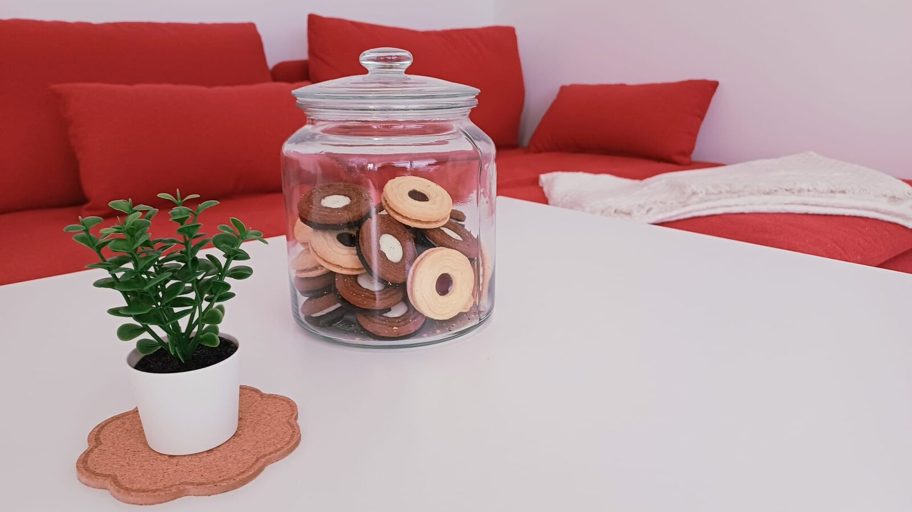
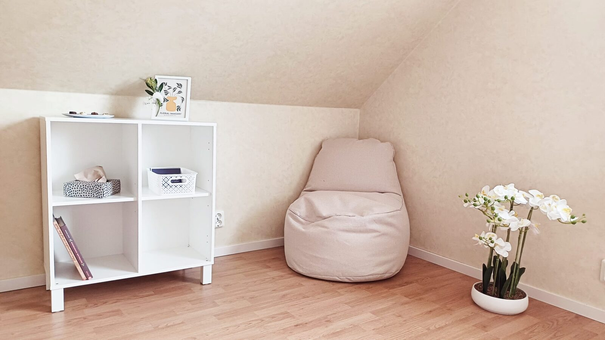
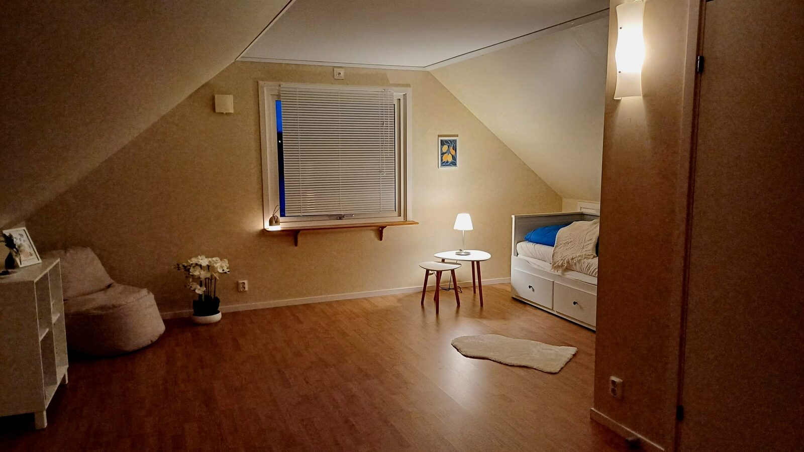
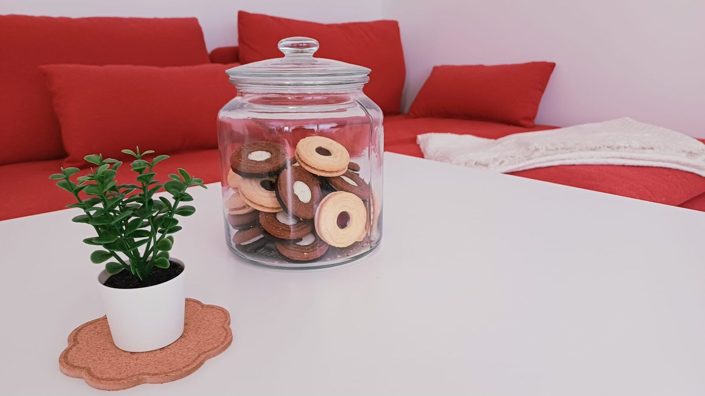
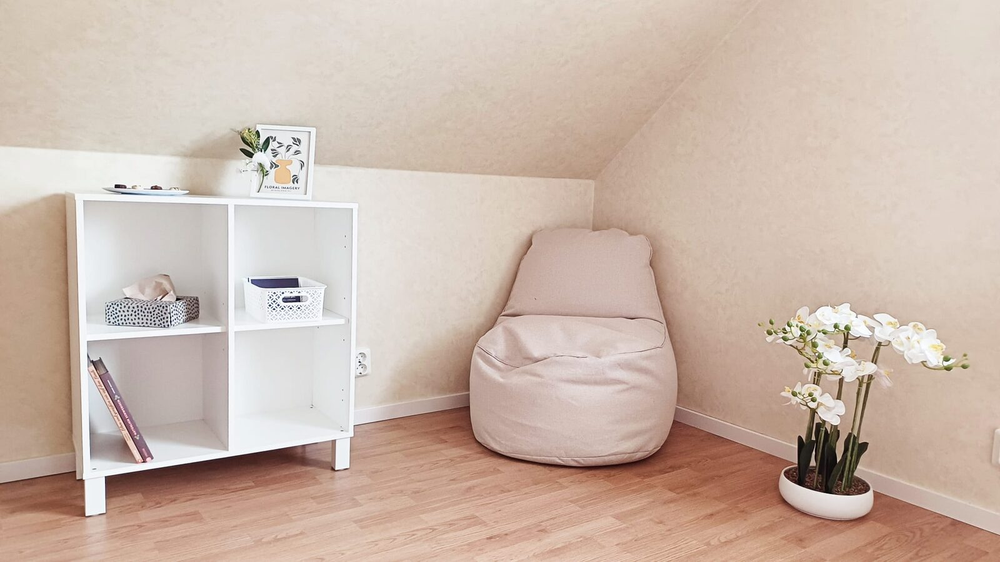
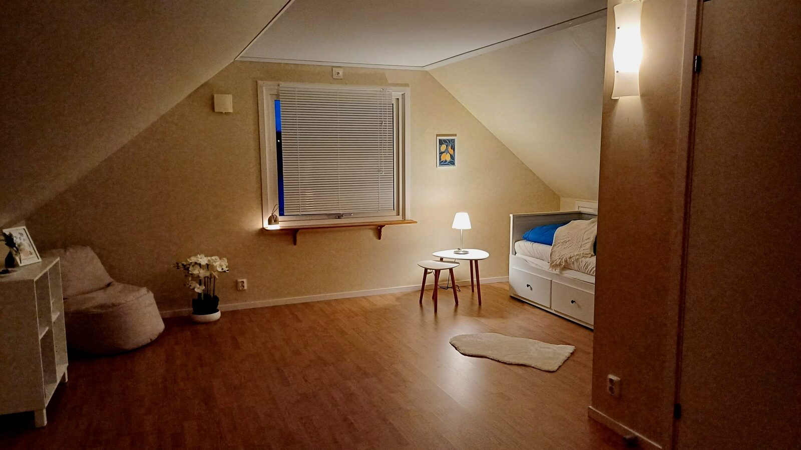

 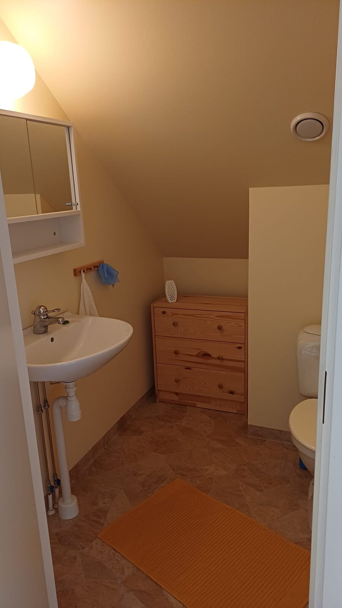
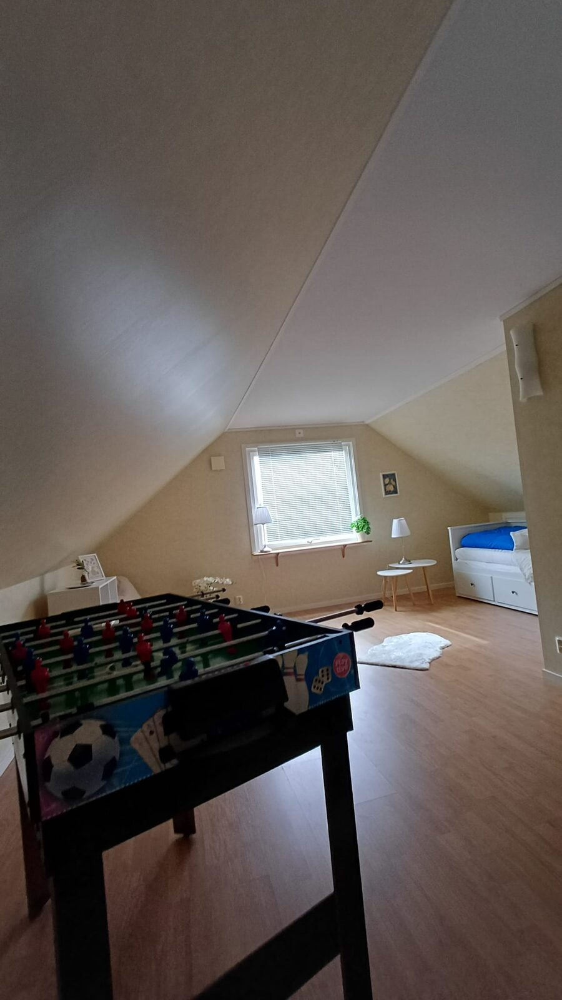
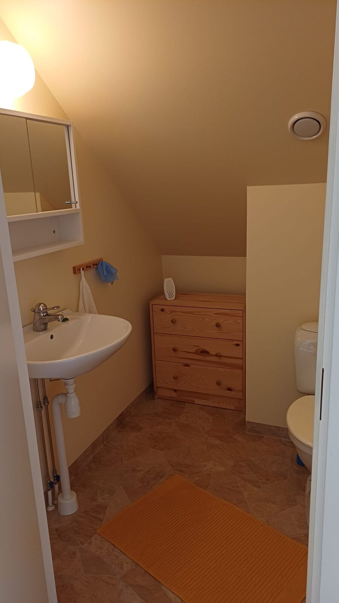
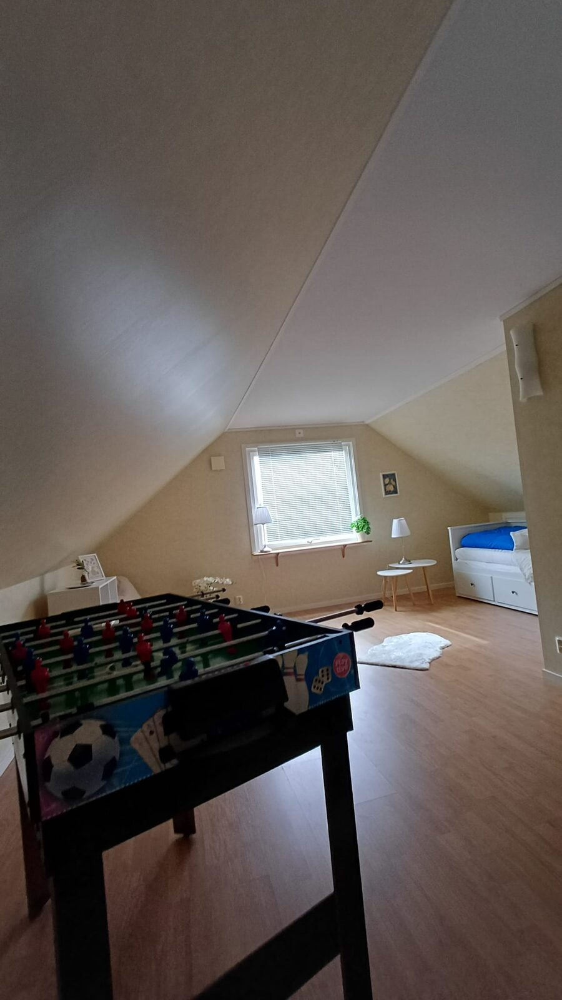
Wichtige Hinweise
- Das Ferienhaus ist ein Nichtraucherhaus. Im Innenbereich ist das Rauchen nicht gestattet.
- Haustiere können leider nicht mitgebracht werden.
Buchungsübersicht
Kontakt
Bei Interesse oder Fragen erreichen Sie uns per E-Mail:
ferienhaus-moerlundanospam@gmx.de